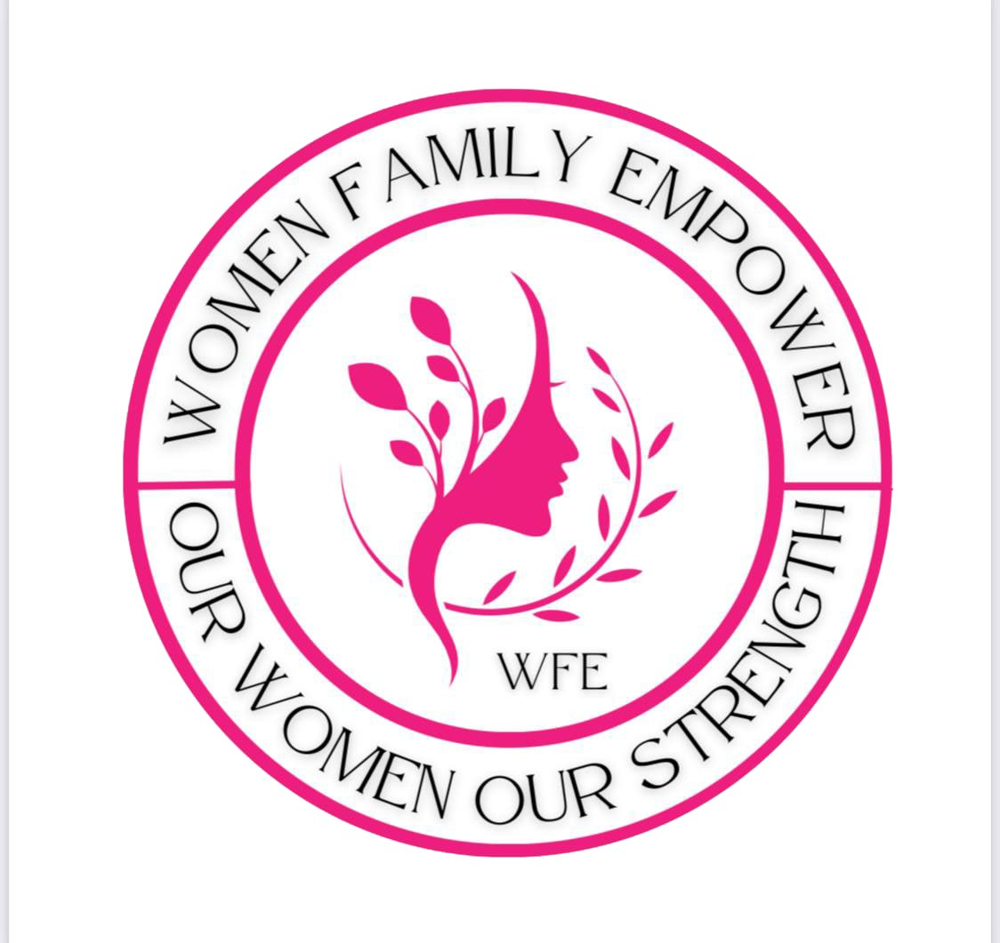
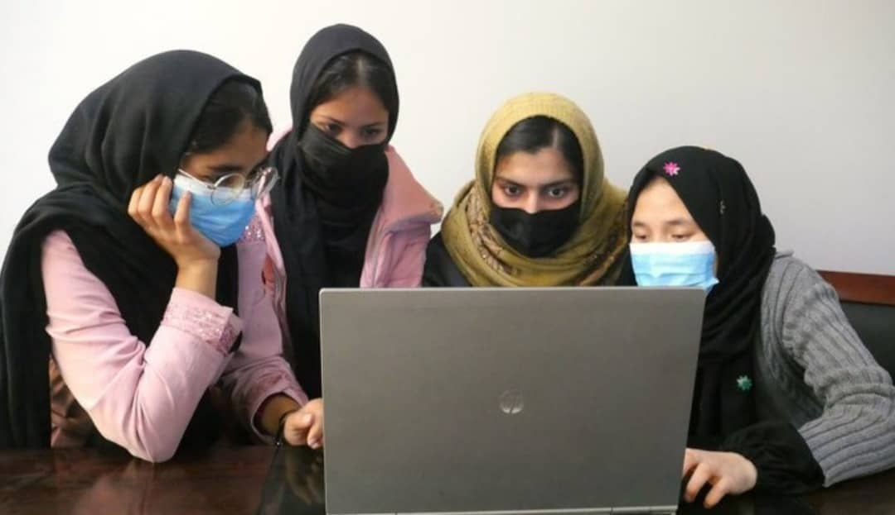
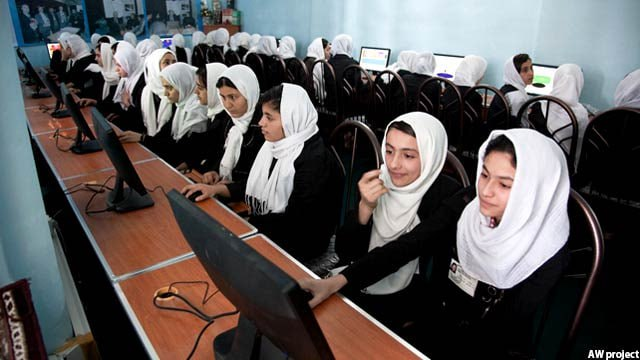
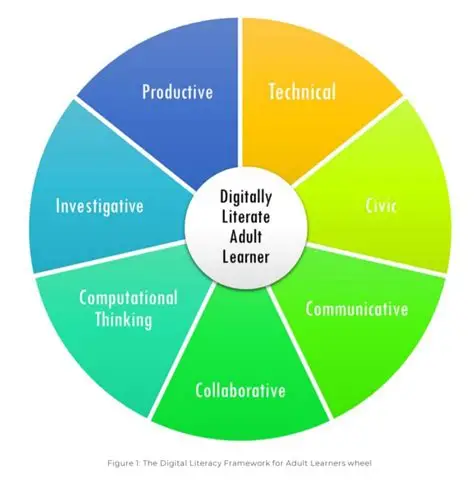
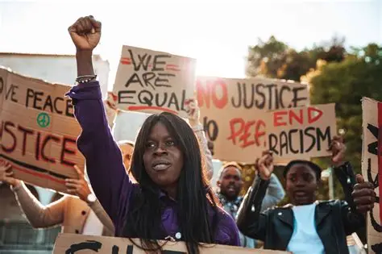

WFE is dedicated to promoting quality education , empowering individuals and communities, and creating lasting hope for a better and more inclusive future. Through learning, support, and opportunity, we work to inspire positive change and sustainable development.

A leading organization committed to education, empowerment, and hope, WFE works to create
meaningful opportunities for learners and communities around the world. Through education
programs, skill development, and community support, WFE continues to make a positive and
lasting impact with the help of dedicated partners and supporters.
Learners reached
Educators & Volunteers
Community Projects
Women & Girls Supported
Countries & Regions
Programs Focused on Education & Skills
WFE strengthens education and empowerment by reaching individuals and communities where they are — respecting their needs, cultures, and abilities. We believe that inclusive education, community collaboration, and long-term support are essential to creating hope and sustainable impact. Our approach focuses on equal access, opportunity, and empowering underrepresented groups.
Our core values guide how we educate, collaborate, and serve communities. We believe in equality, respect, inclusion, and lifelong learning as the foundation of meaningful change.
Learn moreWe bring together educators, volunteers, partners, and communities around a shared mission to expand access to education and empower people to build better futures.
Learn more
WFE began as a small initiative focused on education,
empowerment, and hope. Over time, it has grown into
a mission-driven
organization working with communities and
partners
to expand access to learning and opportunity.

Our work is made possible through years of dedication and
support from individuals, partners, and organizations who
believe in education as a pathway to empowerment and hope.
We are deeply grateful to everyone who helps build, support
,
and champion WFE’s mission, expanding opportunities for
learners and communities worldwide. Beyond local efforts,
WFE collaborates closely with international partners to
strengthen education and community development programs
across different regions. We also engage with educational
institutions, community leaders, and global organizations
to ensure education and empowerment remain central to
international development conversations.
WFE is committed to providing free and open educational resources that are designed to be shared, adapted, and improved. Our learning materials are openly licensed, allowing educators and community organizations to use, customize, and remix them for non-commercial purposes. We believe that every learner and educator deserves access to high-quality foundational education, and that open resources remain central to expanding opportunities and empowering communities globally.
WFE brings people together across cultural, social, and geographic differences to advance education and empowerment. We collaborate with educators, community leaders, institutions, and partners from diverse backgrounds, without political or ideological alignment. Our focus remains on what unites us: creating equal opportunities, fostering collaboration, and preparing individuals for a stronger, more hopeful future.
WFE designs its programs and learning resources with accessibility at the core, ensuring that everyone can participate fully in education and skill development. We continuously work to identify and remove barriers that limit access for individuals with disabilities or underserved groups, so every learner can engage meaningfully and confidently. Accessibility is not just a feature—it is a principle that guides everything we do.
WFE supports learners in exploring the ethical and social dimensions of education, technology, and innovation without promoting specific political or moral viewpoints. Our materials encourage open inquiry, critical thinking, and respectful discussion, empowering individuals to form their own informed perspectives. By cultivating ethical awareness without editorial bias, we help learners make thoughtful decisions and become responsible contributors to society.
WFE is deeply committed to protecting learner privacy. We collect only the data necessary to support learning, never share or sell personal information, and design all tools to meet the highest privacy and security standards. Every learner deserves a safe and trusted environment where their information is used solely to enhance education, ensure effective learning outcomes, and foster confidence in digital programs.
WFE partners with a variety of organizations to deliver educational programs while keeping learners at the center of all technology decisions. Our platform is non-commercial, ad-free, and designed to enhance learning rather than create competition. Educators have flexible tools and multiple options to support diverse learners, ensuring broad access, inclusivity, and a collaborative ecosystem that prioritizes student experience above all.
WFE is a registered nonprofit organization, supported by the generosity of individuals and organizations who share our vision. We are deeply grateful for their contributions, which help us advance education, empowerment, and access to learning opportunities worldwide.
Our accomplishments demonstrate our ability to efficiently use contributions to drive meaningful change. Each year, we work to raise the funding necessary to fuel our mission, and every contribution helps us move closer to our goals.
IRS Form 990
Amplify WFE’s impact by sharing our mission with your network. From social media to updates, discover how you can help us reach more educators, learners, and advocates.
Stay up to date with WFE and share our posts with your network to stay informed and help drive awareness.
For the latest updates, follow the WFE blog! Read stories about our educators, news from partners, and research on how we are helping learners.
Explore WFE BlogPromote our movement in your area using stats, quotes, and videos to spread awareness and support our mission.
WFE is powered by a passionate team of educators, technologists, storytellers, and advocates. From community programs to global initiatives, our people drive impact at every level.
Interested in joining our team? Explore careers at WFE
Join our community of educators, learners, and advocates by signing up for updates from WFE. Be the first to receive news, resources, and opportunities that support education and empowerment worldwide.
Subscribe to international updatesYou can unsubscribe at any time.
Discover WFE’s progress and results through our impact reports, highlighting key milestones, initiatives, and annual data.
Read annual reportsWFE supports innovative education programs that help students and educators access modern learning opportunities.
Explore
We partner with global organizations to promote digital literacy and responsible technology use for all learners.
Explore
Join our advocacy coalition to support inclusive education policies and ensure equal access to learning resources.
Advocate